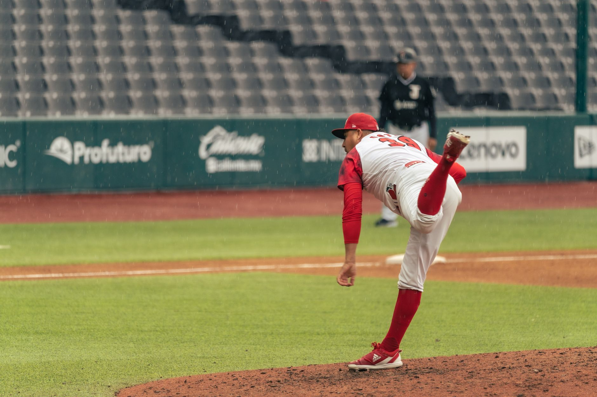

A dominant performance against the Phillies
The baseball world is taking notice as Chris Sale continues to deliver masterclass performances on the mound. In his most recent outing against the Philadelphia Phillies, Sale showcased the precision and power that have become his trademarks. He navigated through a dangerous lineup with ease, demonstrating why he remains a cornerstone of his team's pitching rotation.
During the matchup, Sale was able to control the tempo of the game from the very first pitch. His ability to mix his fastball with devastating breaking balls left hitters searching for answers throughout the evening. This wasn't just a win; it was a statement performance that reminded fans and analysts alike of his elite ceiling.
The effectiveness of his pitch repertoire was evident in the strikeout numbers and the low number of hard-hit balls allowed. By keeping the Phillies' hitters off-balance, Sale ensured that his defense remained engaged and his pitch count stayed efficient.
Strengthening the NL Cy Young candidacy
As the regular season progresses, the conversation around the National League Cy Young Award is heating up. Chris Sale has moved from a mere contender to a frontrunner thanks to his remarkable consistency. His ability to pitch deep into games while maintaining high velocity and movement is rare in the modern era of baseball.
Analysts are pointing to several key metrics that set Sale apart from his peers this year:
Impact on the NL East standings
Beyond individual accolades, Sale's performance has massive implications for the team's postseason aspirations. His recent victory has helped extend the lead in the NL East, providing a much-needed cushion as the division race intensifies. In a division known for competitive parity, having a reliable ace is the ultimate luxury.
When you have a pitcher like Sale, you aren't just playing for a single win; you are playing for momentum that carries the entire clubhouse through a long season.
The psychological boost of a dominant start cannot be overstated. When the rotation knows they have a pitcher capable of shutting down any lineup, the pressure on the offense and the bullpen is significantly reduced. This stability is exactly what a championship-caliber team requires during the grueling summer months.
The technical mastery of his pitching style
What makes Chris Sale so difficult to hit is not just his raw talent, but his technical execution. He possesses a unique ability to tunnel his pitches, making it nearly impossible for hitters to distinguish between his fastball and his secondary offerings until it is too late.
His approach to sequencing is a lesson in modern pitching strategy. He rarely falls into predictable patterns, instead choosing to attack the strike zone when he has the advantage and working the edges when he needs to induce weak contact. This intelligence on the mound complements his physical gifts perfectly.
Observers have noted that his command of the lower half of the zone has improved significantly this season. By forcing hitters to defend the bottom of the plate, he sets up his high-fastball sequences, creating a vertical deception that is incredibly hard to master.
Looking ahead to the postseason race
As the calendar turns toward October, all eyes will be on how Sale maintains this level of excellence. If he continues this trajectory, he will not only be a favorite for the Cy Young but will also be the most feared pitcher in any playoff series. Teams will have to build entire game plans specifically to counter his unique style.
While the pitching staff is performing at an elite level, the success of the team ultimately relies on a balanced attack. Just as we saw when Adley Rutschman Hits Two Home Runs in Camden Return, offensive outbursts are crucial to supporting the hard work of the pitchers. Staying connected to the broader trends of the game helps fans appreciate the full picture of the season.
The road ahead is long, but with Sale leading the way, the outlook for the team in the NL East is incredibly bright. Fans can expect more high-stakes drama as the race for the division title and the Cy Young Award reaches its climax.
See Also
If you enjoyed this Baseball News article, check out Adley Rutschman Hits Two Home Runs in Camden Return for more useful reading.